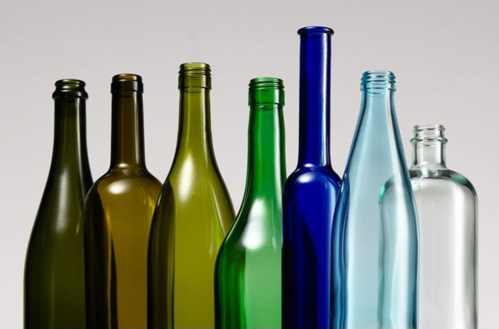
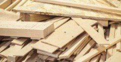
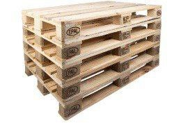

Vorstellung
Durch die Verarbeitung von Holz, Glas und Kunststoff lassen sich aus altem Abfall neue, praktische Dinge herstellen. Meine Idee ist eine Kooperation mit Cafés und anderen Einrichtungen, die Möbel und Komfort benötigen. Die Gäste können ins Café kommen und auf Stühlen aus altem Holz Platz nehmen, die Dekoration kann aus Kunststoff bestehen und die Getränkeständer aus Glas. Auf diese Weise schützen wir die Natur und tun gleichzeitig praktische Dinge.
- Nachhaltigkeit: Wiederverwendung von alten Materialien schont die Umwelt und reduziert Müll.
- Einzigartige Produkte: Jedes Möbelstück ist ein Unikat → hohe Attraktivität für Kunden.
- Eringe Materialkosten: Viele Materialien sind kostenlos oder sehr günstig (z. B. Paletten).
- Trendbewusst: Upcycling und Nachhaltigkeit sind aktuell sehr beliebt.
- Kreativität & Design: Individuelle Gestaltungsmöglichkeiten im Vergleich zu Massenware.
- Positives Image: Umweltfreundliches Unternehmen wirkt modern und verantwortungsvoll.
Starken:
- Längere Produktionszeit: Handarbeit braucht mehr Zeit als industrielle Massenproduktion.
- Begrenzte Stückzahl: Keine schnelle Großproduktion möglich.
- Schwankende Materialverfügbarkeit: Nicht immer sind passende Recyclingmaterialien verfügbar.
- Unterschiedliche Qualität: Alte Materialien können beschädigt oder ungleichmäßig sein.
- Höherer Arbeitsaufwand: Mehr Handarbeit bedeutet mehr Arbeitskraft.
Schwächen :
- Nachhaltigkeit Schwankende Materialverfügbarkeit Kooperationen mit Schulen, Firmen & Sammelaktionen
- Einzigartige Produkte Keine Massenproduktion möglich Verkauf als limitierte Editionen
- Geringe Materialkosten Unterschiedliche Materialqualität Materialprüfung & Qualitätskontrolle
- Kreativität Längere Produktionszeit Standard-Designs & klare Arbeitsteilung
- Positives Image Höherer Arbeitsaufwand Effiziente Abläufe & Teamorganisation
Wie kann man Schwächen verbessern?
potentiale Käufer:
Umweltbewusste Menschen, Familien, Studenten, Cafés, kleine Restaurants, Menschen, Personen, die nachhaltige Produkte unterstützen wollen. Begründung: Diese Gruppen interessieren sich für Nachhaltigkeit, Design oder günstige Alternativen zu neuen Möbeln.

tatsächliche Käufer:
Jugendliche und junge Erwachsene (16–35 Jahre), Studenten mit begrenztem Budget, Umweltbewusste Stadtbewohner, Kleine Cafés und Start-ups mit nachhaltigem Image. Begründung: Diese Gruppen haben echtes Kaufinteresse, brauchen Möbel/Deko und sind bereit, für nachhaltige Produkte Geld auszugeben.

Konkurrenz:
Direkte Konkurrenz: IKEA – günstige Möbel, große Auswahl, aber nicht individuell, Second-Hand-Möbelhäuser – gebrauchte Möbel, oft ohne modernes Design
Indirekte Konkurrenz: Online-Marktplätze (eBay Kleinanzeigen) – sehr günstig, aber keine Garantie/Qualität
Vorteil von ReMade gegenüber der Konkurrenz: Nachhaltig & umweltfreundlich, Individuelle Unikate, Persönliche Geschichte hinter jedem Produkt, Regionale Produktion
Umfrage
Ziel der Umfrage: Herausfinden, ob Menschen Interesse an Upcycling-Möbeln haben und wie viel sie bezahlen würden. Umfragefragen (Beispiel): 1. Würdest du Möbel aus recycelten Materialien kaufen? 2. Wie wichtig ist dir Nachhaltigkeit beim Möbelkauf? 3. Wie viel würdest du für ein Upcycling-Möbelstück bezahlen? 4. Wo würdest du solche Möbel kaufen? (Online / Markt / Laden)
Auswertung der Umfrage (Beispiel): 80 % würden Upcycling-Möbel kaufen, 70 % finden Nachhaltigkeit wichtig oder sehr wichtig, 60 % würden 40–60 € für ein Möbelstück zahlen, 50 % bevorzugen den Online-Kauf, 30 % Märkte, 20 % Laden.




Benötigte Waren: Holzpaletten, Holzreste, Glasflaschen. Schrauben, Nägel, Farben, Lacke. Maßnahmen: Palettenspenden von Firmen, Sammelaktionen, Baumarkt-Einkauf.
Arbeitskraft: Produktion, Design, Marketing, Finanzen.
Maßnahmen: Klare Rollenverteilung, feste Arbeitszeiten. Werkzeuge: Säge, Akkuschrauber, Schleifmaschine, Pinsel. Maßnahmen: Schulwerkstatt nutzen, Geräte ausleihen, Sicherheitsregeln beachten.
Wissen: Holzverarbeitung, Design, Sicherheit, Marketing. Maßnahmen: Einweisung durch Lehrer, Tutorials, Prototyp bauen
- Materialbeschaffung:Holzpaletten, Schrauben, Lack.Materialteam. Paletten: 0 € (Spende) Schrauben: 3 € Lack/Farbe: 5 € Summe: 8 €
- Materialprüfung & Vorbereitung: Paletten prüfen, Nägel entfernen, Holz zuschneiden. Produktionsteam. Schleifpapier: 2 € Summe: 2 €
- Schleifpapier: 2 € Summe: 2 € Herstellung / Zusammenbau: Tisch zusammenschrauben, Stabilität prüfen. Produktionsteam. Strom/Werkzeug-Abnutzung: 3 € Summe: 3 €
- Oberflächenbehandlung: Schleifen, Lackieren, Trocknen. Produktionsteam. Zusätzlicher Lack/Pinsel: 4 € Summe: 4 €
- Qualitätskontrolle: Stabilität, Optik, Sicherheit prüfen. Qualitätsverantwortlicher. Fotos, Online-Inserat, einfache Verpackung. Marketing & Verkauf Verpackung: 3 € Summe: 3 €
- Gesamtkosten pro Produkt 8 € + 2 € + 3 € + 4 € + 3 € = 20 €
- Verkaufspreis: 40€ Gewinn pro Stück: 20€
Ablauf der Produktion
- Beispielprodukt: Beistelltisch aus Palettenholz. Fixkosten (einmalig / pro Projekt). Werkzeuge (Säge, Akkuschrauber, Schleifer – Schulanteil): 200 €. Werbung (Flyer, Instagram-Anzeigen): 50 € Fixkosten gesamt: 250 €. Variable Kosten (pro Produkt). Kostenart Betrag. Palettenholz 0 € (Spende). Schrauben & Nägel 3 €. Lack/Farbe 5 €. Schleifpapier 2 €. Strom/Werkzeugabnutzung 3 €. Verpackung 3 €. Produktionskosten pro Stück: 20 €
- Schritt 1: Kostenbasis: Herstellungskosten pro Produkt: 20 €. Schritt 2: Gewinnaufschlag: Gewinnaufschlag: +30 €
- (Begründung: Handarbeit, Unikat, Nachhaltigkeit): Marktvergleich Vergleichbare Möbel: 40–70 € Umfrage-Ergebnis: Mehrheit zahlt 40–60 €. Verkaufspreis: 40 € Produktionskosten: 20 € Gewinn pro Stück: 20 €
Finanzplan
- Geschäftsführung (oberste Ebene): Zuständig für: Gesamtplanung und Organisation, Entscheidungen treffen, Kontrolle von Kosten und Ablauf
- Abteilung Produktion: Zuständig für: Herstellung der Möbel. Zuschneiden, Schleifen, Zusammenbauen. Material richtig verwenden. Untergeordnet:
- Qualitätskontrolle. Qualitätskontrolle: Zuständig für: Prüfung von Stabilität und Sicherheit, Kontrolle der Optik, Freigabe für den Verkauf. Abteilung Marketing & Verkauf: Zuständig für: Social Media (Instagram/TikTok), Produktfotos und Werbung, Kundenkontakt und Verkauf. Abteilung Finanzen & Einkauf: Zuständig für: Kostenüberblick und Budgetplanung. Einkauf von Material. Berechnung des Verkaufspreise.